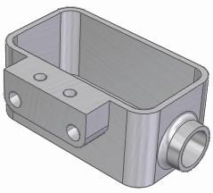

Material Table command
The Material Table command displays the Material Table dialog box. You can use the Material Table dialog box to define the material and mechanical properties for a part.

For example, you can:
-
Apply a material to a part in the current document.
-
On the Material Properties tab, use the Add Custom Property button
 to add user-defined physical, chemical, mechanical, electrical, and thermal properties
to the list of standard properties for a selected material. For more information,
see the help topic, Create a custom material property.
to add user-defined physical, chemical, mechanical, electrical, and thermal properties
to the list of standard properties for a selected material. For more information,
see the help topic, Create a custom material property. -
In a sheet metal document, use the options on the Gage Properties tab to define the properties for the sheet metal stock you are using, such as material thickness and bend radius. In Solid Edge, you can store sheet metal gage information in the material library or in a Microsoft Excel file. For more information, see Sheet metal gages file.
-
Create, edit, and delete material property sets, which are stored in the material library property file, for example, libraryName.mtl. For more information, see Material library properties file.
-
Change the units that are used to display material properties. You can use the Units button to open the Units page (Solid Edge Options dialog box). For more information, see Set the units of measure.
-
Go to the folder location of the material table properties files by selecting the Material Folder Location button . You also can Change the location of the material folder.
-
When a material does not match what is in the Material Library, the material highlights, and the out of date indicator is displayed. The update option will update the options such that the properties match what is in the library.
-
In a model with an active Solid Edge simulation study, select the Highlight Simulation Properties button
 to identify the material properties that are required for the type of study you created.
When you select this button, you can verify that values are defined for each of the
properties that are highlighted in the table. For more information, see Verify simulation material properties.
to identify the material properties that are required for the type of study you created.
When you select this button, you can verify that values are defined for each of the
properties that are highlighted in the table. For more information, see Verify simulation material properties.
How do I
Apply a material to a partAdd a favorite material
Create a new material
Create a custom material property
Change the location of the material folder
Change the Material Table units
Learn more
Material TableMaterial PathFinder node
Managing material libraries
Copying and pasting materials
Importing and exporting materials
Look up more details
Material library property fileSheet metal gages file
Material Table dialog box
Material Properties tab
Gage Properties tab
Favorites and Recent Materials tab